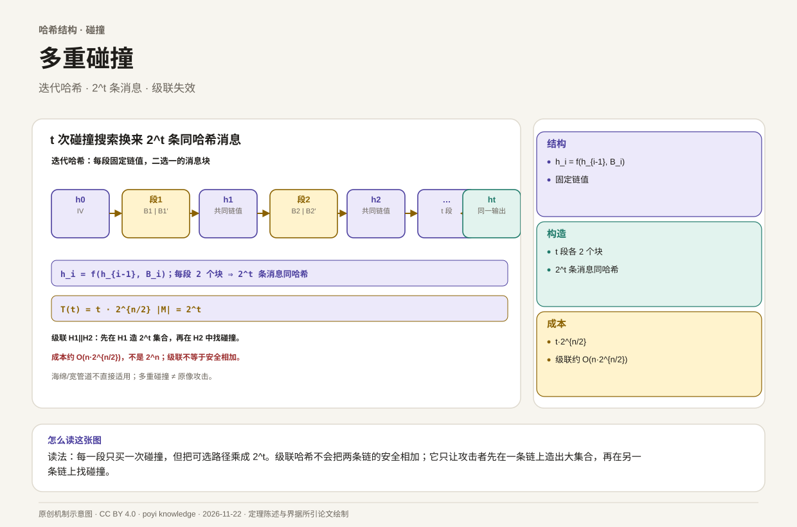
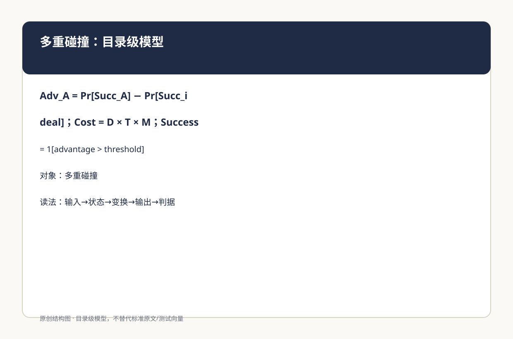

原理与机制
攻击：多重碰撞（Multicollision）。### 迭代哈希的链式结构
Merkle-Damgård 型哈希把消息分成块 B_1,…,B_t，迭代计算
h_i = f(h_{i-1}, B_i)，h_0 = IV，
输出 h_t。若在某个链值 h_{i-1} 下找到一对块 (B_i, B_i′)，使
f(h_{i-1}, B_i) = f(h_{i-1}, B_i′)，
就可以在不让后续链值改变的情况下替换这一块。### Joux 的多重碰撞构造
从 h_0 = IV 开始，对 i=1,…,t：
1.调用碰撞寻找器，找到 B_i 与 B_i′，使 f(h_{i-1}, B_i) = f(h_{i-1}, B_i′)； 2.令 h_i 等于这个共同链值； 3.继续下一段。最后，任意选择每个位置的 B_i 或 B_i′，得到 2^t 条不同消息，它们经过完全相同的中间链值，因而哈希到同一输出。成本约为 t 次碰撞搜索；对 n 位输出，每次约 2^{n/2}，总成本约 t·2^{n/2}。### 为什么级联哈希不倍增安全性
把两个迭代哈希串联成 F(M) = H_1(M) || H_2(M)，直觉上像 2n 位输出。Joux 指出：先为 H_1 构造 2^t 多重碰撞，再在这 2^t 条消息中寻找 H_2 的碰撞；当 t 足够大时，两条链同时碰撞的概率显著上升。对两条 n 位链，找到级联碰撞的成本约为 O(n·2^{n/2})，而不是生日攻击在 2n 位输出上的 2^n。级联的安全性接近“较容易的那条链”，不是两条链之和。

为什么重要
许多协议设计者以为 H_1 || H_2 提供 2n 位碰撞安全，因而可以用两条较短的哈希抵抗生日攻击。Joux 的结果说明，对迭代哈希，这个直觉是错的：多重碰撞把“找一条消息对”变成“在指数大的消息集合里找第二条链的碰撞”，第二条链的碰撞概率被集合规模放大。### 对哈希签名与承诺的影响
哈希签名、Merkle 树、承诺方案常把“碰撞困难”当作安全基石。若底层是迭代哈希，多重碰撞会让攻击者以远低于 2^n 的成本制造大量同哈希消息；在承诺中可能意味着同一承诺可打开到多个值，在签名中可能意味着消息替换。具体影响取决于协议是否只依赖抗碰撞，还是还依赖第二原像、原像等性质。### 不是所有哈希结构都一样
海绵结构（SHA-3）、宽管道、随机化哈希、HAIFA 等不直接套用 Joux 的“固定链值 + 可替换块”论证。判断时要看压缩函数、链值宽度、消息块处理和最终输出，而不是只看“输出多少位”。
应用与实例
1.确认是否为 Merkle-Damgård 迭代结构；链值是否等于输出长度。2.检查压缩函数是否容易找到同链值碰撞；若是，评估 t 段多重碰撞的成本。3.对级联哈希，检查两条链是否独立、输出是否等长；估算在 2^t 消息集合中找第二条链碰撞的 t 值。4.检查协议是否只需要抗碰撞，还是还需要抗第二原像/原像；多重碰撞主要打击抗碰撞。5.对 SHA-3/海绵结构，不要直接套公式；按具体结构重新分析。6.记录输出长度 n、链长 t、碰撞搜索成本；不要把“2n 位输出”当作“n 位安全”的自动保证。### 工程场景
- 旧式 MD5/SHA-1 级联：不要用“双哈希”补救碰撞攻击。- Merkle 树与哈希签名：评估多重碰撞对叶子/内部节点的影响。- 承诺与随机数生成：检查是否把 H(x) 当作唯一绑定。

边界与攻击面
1.非迭代结构。Joux 的构造依赖固定链值和可替换消息块；海绵/宽管道结构不直接适用。2.压缩函数碰撞难找。若压缩函数本身抗碰撞，t 次搜索的成本仍然是真实的。3.只依赖原像/第二原像。多重碰撞主要破坏抗碰撞；它不自动给出原像攻击。4.输出长度与链值长度不同。宽管道结构可能让内部碰撞不直接变成输出碰撞。5.随机化/加盐哈希。若哈希输入被随机化，攻击者不能自由选择可替换块。6.级联两条链不等长或强独立。成本估算会变；不能机械套 O(n·2^{n/2})。“2^t 条消息同哈希”不等于“找到原像”；“级联哈希一定安全”也不成立。要按具体构造与安全目标判断。
历史与背景
Joux 在 CRYPTO 2004 的论文中证明：对迭代哈希，构造 2^t 多重碰撞的成本约是普通碰撞的 t 倍，而不是 2^t 倍；并据此解决“级联多个迭代哈希能否增强安全性”的长期问题。论文的结论直接适用于 MD5、SHA-1 等 Merkle-Damgård 结构。### 之后的影响
SHA-1 碰撞攻击公开后，级联哈希的“双保险”直觉被彻底放弃；SHA-3 标准化选择海绵结构，迭代哈希的结构性弱点成为设计讨论的一部分。Joux 的多重碰撞成为哈希设计、哈希签名和承诺协议评审中的基础检查项。
逐步示例与核验
形式模型与复算步骤
[P\approx 1-\exp!\left(-\frac{q(q-1)}{2,2^n}\right)]
多重碰撞的公开参数、密钥/随机数与消息；变量说明：q 查询次数，n 输出位数。1.计算查询对数。2.代入生日界。3.与目标碰撞概率比较。边界：公式只覆盖已登记的参数与假设；参数取值、标准版本和实现细节仍以来源为准。
参考出处
- Wikipedia search entry for 多重碰撞. https://zh.wikipedia.org/w/index.php?search=%E5%A4%9A%E9%87%8D%E7%A2%B0%E6%92%9E
- Handbook of Applied Cryptography (Menezes, van Oorschot, Vanstone). https://www.cacr.math.uwaterloo.ca/hac/